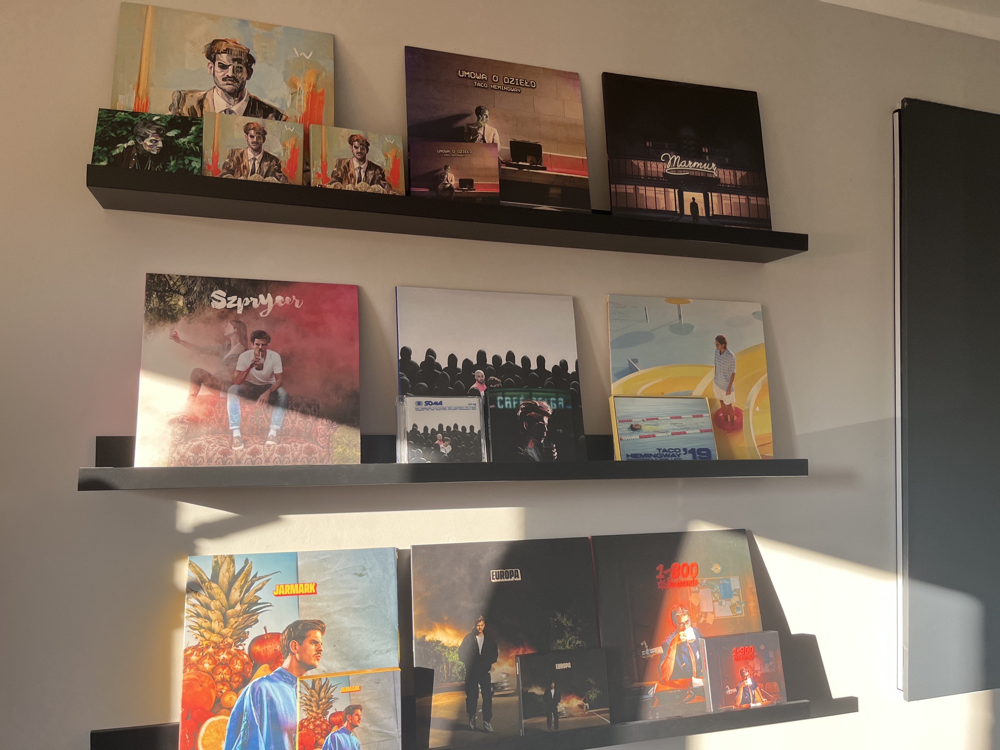

Witajcie!
Nazywam się Jakub Kaszyński. Urodziłem się 12 marca 2004 w Bydgoszczy. Moim znakiem zodiaku są ryby. Aktualnie jestem studentem II roku Architektury Informacji na UMK w Toruniu. Ukończyłem IV LO im. Kazimierza Wielkiego w Bydgoszczy.
Moimi zainteresowaniami są:
- muzyka:
- Polski Pop
- Polski Rap/Hip-Hop
- Rock Progresywny, Rock Gotycki
- Muzyka niezależna, tzw. "Indie"
- Pop, Electropop, Hyperpop, Pop punk, Pop alternatywny
- edycja filmów,
- kolekcjonowanie albumów na płytach winylowych,
- podróżowanie
- gry wideo
Poniżej znajduje się odnośnik do kolekcji moich płyt
Klik Klik
